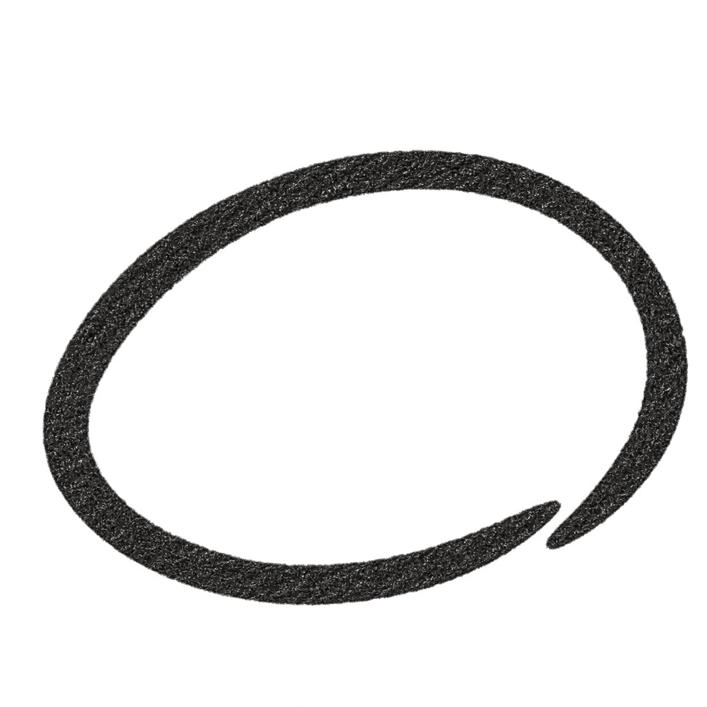

NOTO: TINY NOTES
A thought.
A little paper.
Open Noto and start writing. A quiet place for a quick calculation, a sketch, or something you don’t want to forget.
01
Go straight to the paper.
Write with Apple Pencil on iPad, or your finger on iPhone. Choose a blank page, lines, a grid, or dots.
02
Keep a little piece.
Circle your handwriting with the lasso to make a clipping. Paste it into another app, or keep it nearby in the temporary shelf.
03
Find your next thought.
Pinch inward to see your papers. At the brief stop, keep pinching to enter the overview. Tap a paper to return to it.
打开，就是一张纸。
随手记下一点想法，算一道题，画几笔。圈选需要的部分，粘贴到其他 App。双指捏合，在短暂停顿后继续缩小，就能看到所有纸张。
不需要创建账号。笔记保存在设备上。
查看中文使用帮助 ↗